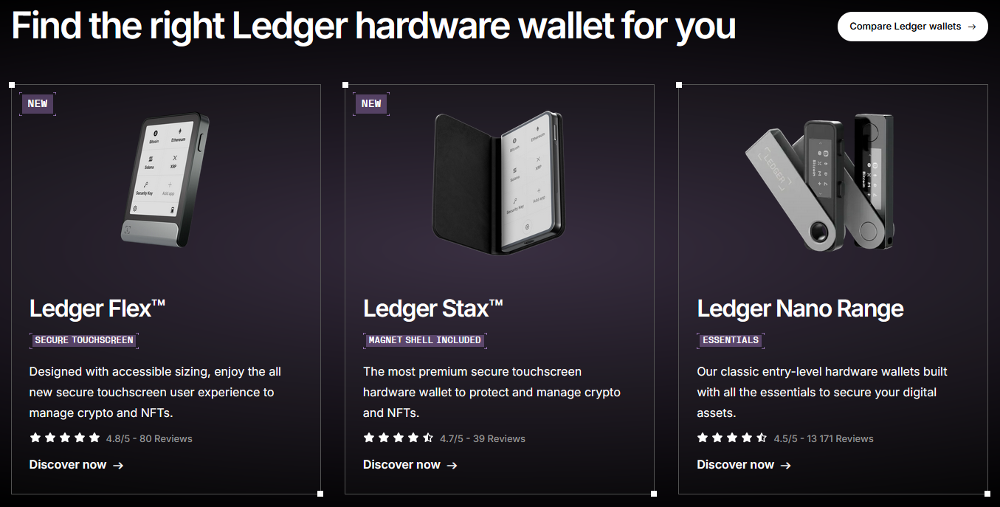

Introduction: Stay in Control of Your Assets with Ledger
Protecting your digital assets is not something to overlook. With increasing online threats and data vulnerabilities, using a secure management interface like Ledger Live is an essential step toward safeguarding your holdings. Ledger, known for its reliable hardware wallets, also offers the Ledger Live app, a comprehensive solution that makes interacting with your Ledger wallet simple, streamlined, and secure. Whether you're new to the ecosystem or looking for a better way to manage your assets, Ledger Live Login is the way forward.
Let’s explore what Ledger Live is, how it works, and how to set it up seamlessly on different operating systems.
Ledger Live is the official companion application developed by Ledger to interact with their hardware wallets. It serves as the central hub to view balances, confirm transactions, install apps, and manage multiple accounts. The app is available for desktop (Windows, Mac, and Linux) and mobile (iOS and Android) devices.
What makes it even more reliable is its native compatibility with Ledger devices. Without the hardware wallet, the app itself is non-functional, reinforcing Ledger’s focus on security-first design.
To begin using Ledger Live, follow this simplified setup guide. The steps below outline how to install and activate the app on your device:
1. Head over to ledger.com/start
2. Choose your device’s operating system and download the Ledger app
3. Once downloaded, install the app by following the on-screen instructions
4. Open the app and select "Get Started"
5. Connect your wallet using the included USB cable or Bluetooth (for supported models)
6. Set a PIN code on your device if prompted
7. Write down and securely store your recovery phrase
8. Finalize device pairing in the app interface
9. Complete the initial configuration and access the Ledger Live Login screen
10. From here, you can begin managing your wallet, install apps, and add accounts
Your device and Ledger Live will now work together to let you securely control your digital assets.
Absolutely. Security is at the core of everything Ledger builds. The Ledger app never stores or accesses your private keys. Instead, your wallet keeps them isolated in a certified secure chip, while the Live app acts only as the interface.
All operations, including signing and verifying transactions, require your approval directly on the hardware device. This dual-layer protection—hardware plus app—adds a robust shield to your digital activity.
Once your Ledger Live Login is complete, you gain access to a variety of useful tools and features. Here's a look at what’s possible through the interface:
Thanks to its intuitive layout, Ledger Live offers both convenience and powerful control.
Ledger has made parts of its ecosystem open-source, particularly the Ledger Live interface and firmware components. This ensures transparency and allows community developers to contribute to its evolution. While not every part of Ledger Live is open-source, the critical security components have been designed with verifiability in mind.
Keeping your app updated is essential for both feature access and security. Here's how to do it:
You can also visit ledger.com/start to get the most recent version.
No. Ledger Live Login cannot be performed without a Ledger hardware wallet. The app requires real-time validation and authentication through the device, making the combination non-optional. Think of Ledger Live as the software side of your security system—it only functions when the hardware is plugged in or connected via Bluetooth.
In case your device is lost or reset, recovery is simple—thanks to the recovery phrase. Here’s how:
Once completed, your full account details and balances will be restored. Make sure your recovery phrase is kept offline and away from unauthorized access.
Using the Ledger Live Login interface provides a safe, streamlined way to manage your hardware wallet. It’s not just about sending or receiving—you get a complete overview, portfolio tracking, app installations, and device control—all under one roof. Together with your wallet, it creates a secure and efficient environment to manage your digital life.
Don't wait—head to ledger.com/start and download the app that ensures you’re always in charge of your digital activity.